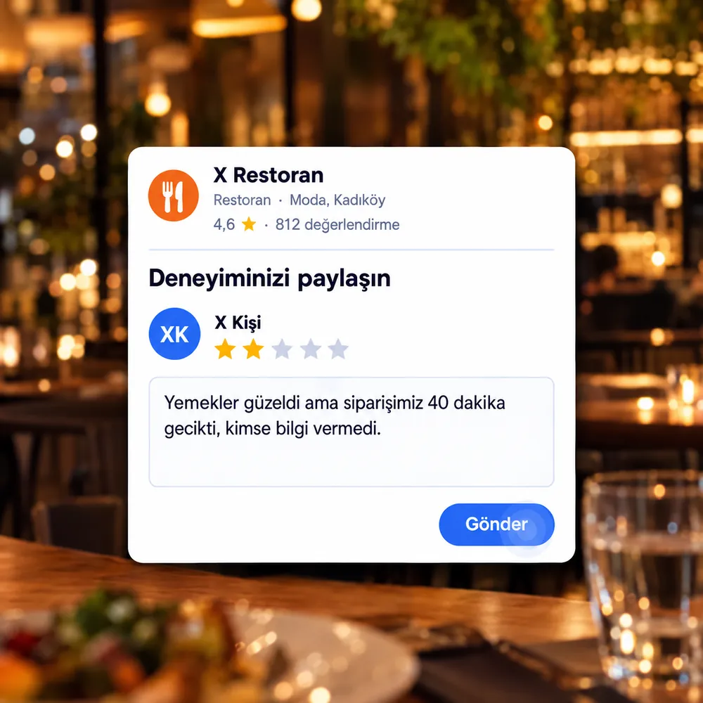
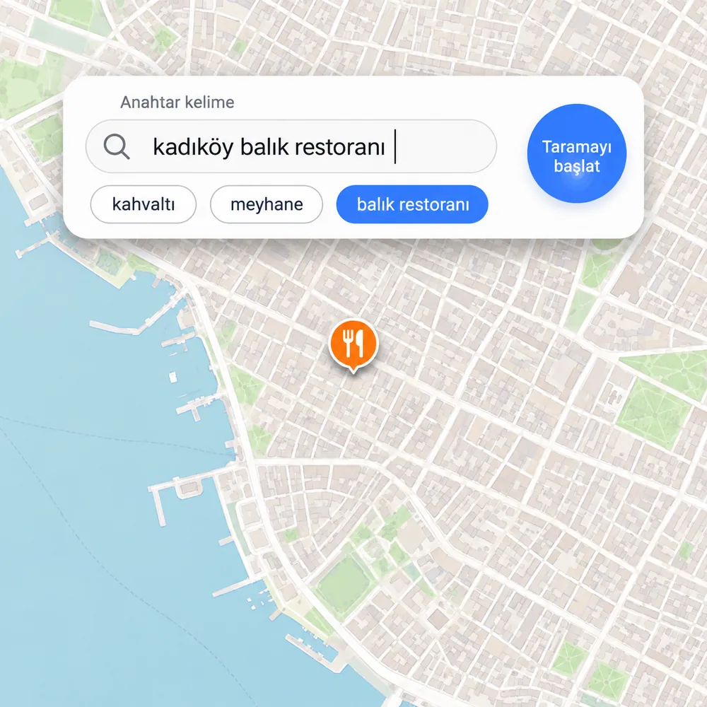
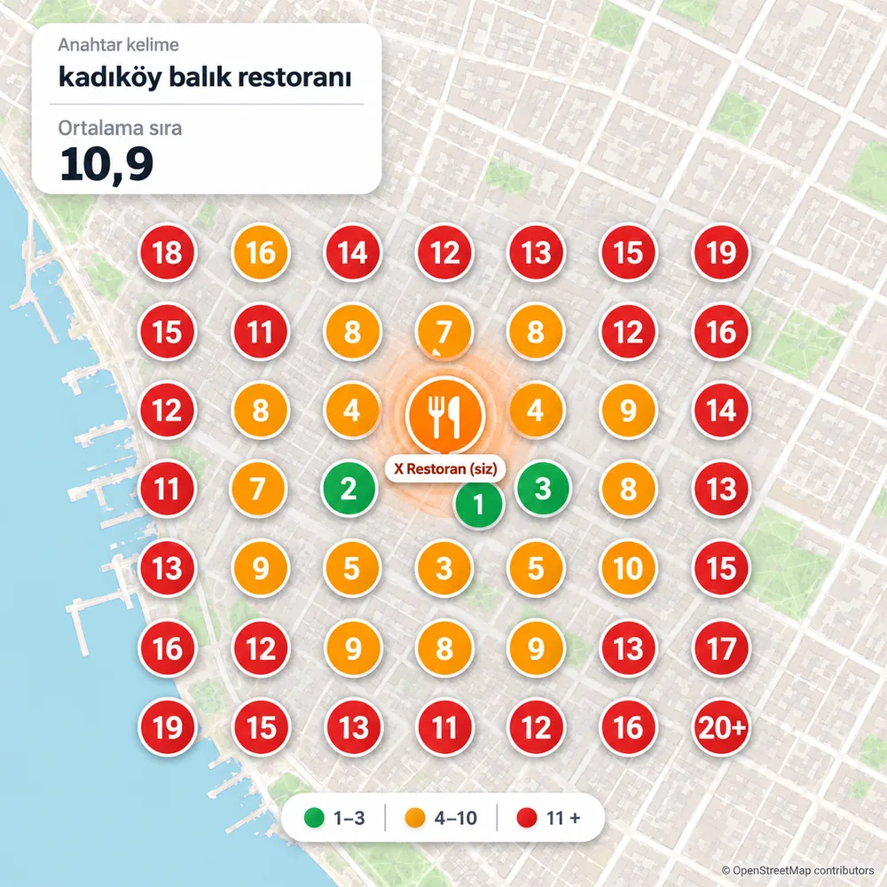

Cevap
1.188 TL/ay
KDV dahil
(990 TL + KDV)


Müşterilerinizin aradığı kelimeyle tarama yaparız.

Mahallenin her köşesinde kaçıncı çıktığınız renklerle görünür.

Bir noktaya basın, sizi geçen işletmeleri görün.
Görseller temsilîdir; isimler ve yorumlar örnektir.
Harita verisi © OpenStreetMap contributors
10’da 7işletme, son gelen yorumların hiçbirini cevaplamamış.
4’te 1işletmenin cevap bekleyen olumsuz bir yorumu var.
[Ay Yıl] tarihinde [N] yerel işletmenin herkese açık Google profilini inceledik.
İlk müşterimiz: X Semti’nde bir [sektör]. [N] yorumunun hiçbirine cevap verilmemişti; bugün hepsi cevaplı.
Yeni bir yorum geldiğinde WhatsApp’tan haber veririz. Hazırladığımız cevabı okursunuz; içinize sinerse tek dokunuşla Google’da yayına girer.
Olumsuz bir yorum bile anında yakalanır.

Hazırlanan yanıtı tek tuşla onaylayın ya da başka yanıt isteyin.
Siz hiçbir şey yazmadan yorum yanıtlanır.
Görseller temsilîdir; isimler ve yorumlar örnektir.
Profilinize bizi yönetici olarak eklersiniz. Profil yine sizin adınıza kalır.
Her cevabı önce siz görür, isterseniz düzeltirsiniz. 4–5 yıldızlı yorumların cevabını dilerseniz bize bırakın.
Bıraktığınızda ödediğiniz ayın sonuna kadar devam ederiz; kalan günler için iade yapılmaz. Profiliniz sizde kalır.
İlk 14 gün ücretsizdir, kart bilgisi istemeyiz. Deneme bitince devam etmek istemezseniz hiçbir şey ödemezsiniz; taahhüt de yok. Bırakmaya karar verirseniz ödediğiniz ayın sonuna kadar hizmet sürer, kalan günler için iade yapılmaz.
1.188 TL/ay
KDV dahil
(990 TL + KDV)
2.388 TL/ay
KDV dahil
(1.990 TL + KDV)
Size özel
Şube sayınıza ve ihtiyacınıza göre birlikte karar veririz.
Bizimle görüşünBaşlangıcı ve ödemeyi WhatsApp üzerinden konuşuruz.
| Özellik | Cevap | Cevap + Takip | Kurumsal |
|---|---|---|---|
| Yapay zekâyla cevap taslağı | |||
| Tek dokunuşla onay | |||
| Yorum QR’ı, paket gerekmez | Ücretsiz | Ücretsiz | Ücretsiz |
| Profil değişince haber | |||
| Ayda bir profil karnesi | |||
| Haftalık sıra ölçümü | |||
| Önünüze geçen rakipler | |||
| İyi yorumlara otomatik cevap | |||
| Eski yorumlara cevap | 100’e kadar | 300’e kadar | Tümü |
| Şube sayısı | 1 | 1 | İhtiyaca göre |
| Takip edilen arama | 3 | İhtiyaca göre |
Sıralamaya Google karar verir. Biz sıranızı ölçer ve size gösteririz; üst sıra garantisi vermeyiz.
Paket ayrıntıları ve sık sorulan sorular →Evet, hepsi aynı hizmetin farklı dönemlerdeki adları. Bugün Google İşletme Profili deniyor: işletmenizin Haritalar’da ve aramada çıkan kartı. Biz onu sizin izninizle yönetiriz, sahibi her zaman siz kalırsınız.
Evet; Google, Apple ve Yandex haritalarına ekliyoruz. Haritalar kayıt için ücret almaz, bizim tek seferlik kurulum ücretimiz var: Google için [600 TL], Apple ve Yandex birlikte [3.588 TL], KDV dahil.
Doğrulamayı harita şirketi yapar (kısa bir video ya da kod ile); birkaç gün sürebilir. Harita kaydı ayrıntıları →
Kullanırsınız. Telefonunuza gelen mesajdaki düğmeye dokunmanız yeterli. Kurulumu da birlikte, birkaç dakikada yaparız.
Hayır. Haksız bulduğunuz bir yoruma sakin ve düzgün bir cevap taslağı hazırlarız; siz onay vermeden yayınlanmaz. Örnek cevaplar →
Yok. Bağımsız bir hizmetiz; profilinize yalnızca sizin verdiğiniz yönetici yetkisiyle erişiriz.
Google profilinizi 12 başlıkta inceleyip sonucu WhatsApp’tan iletelim. Ücret yok, hiçbir şeye bağlanmazsınız.
Ücretsiz profil karnemi iste